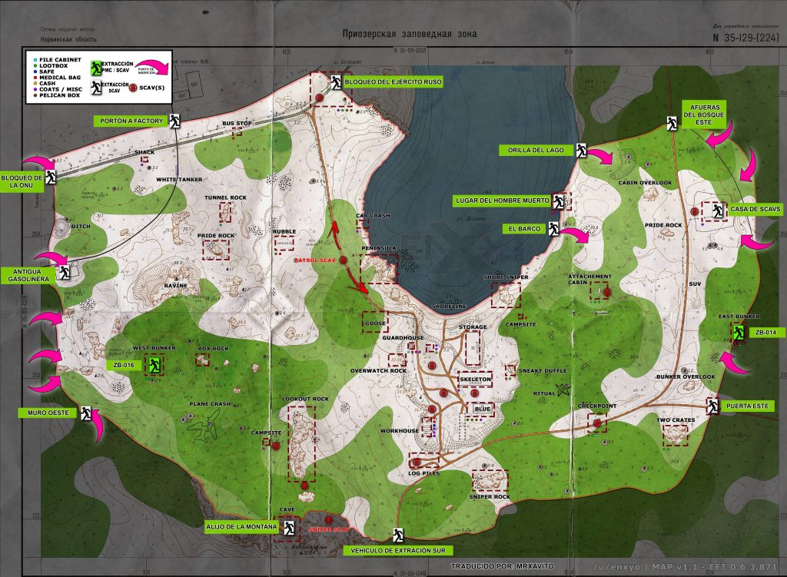
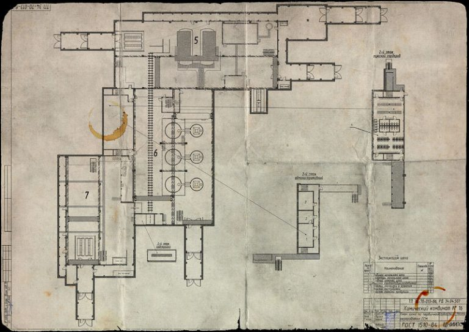
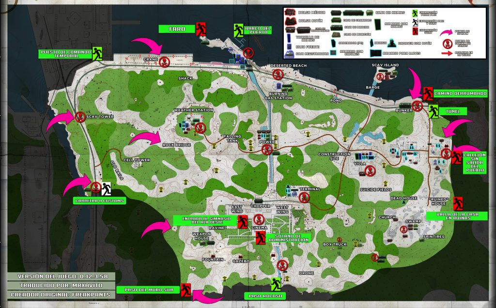
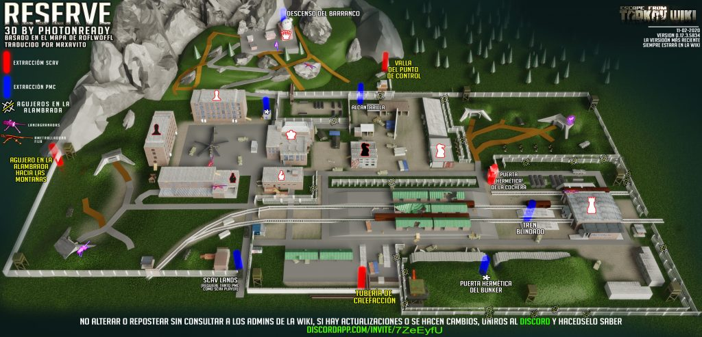
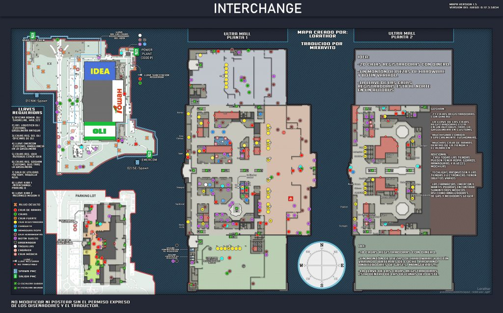
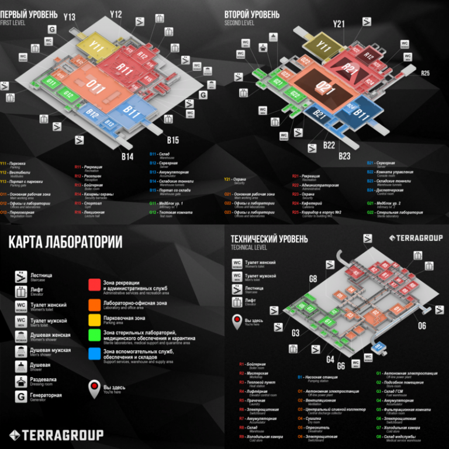
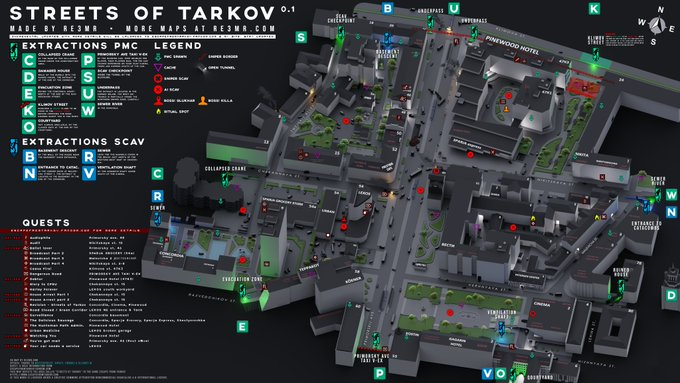

Mapas
Customs
Customs es un gran área de parque industrial situada junto a la fábrica.
Este área alberga una terminal de aduanas, instalaciones de almacenamiento
de combustible, oficinas y dormitorios, así como una variedad de otros edificios.
Duración: 40 minutos y número de Jugadores: De 7 a 12.

Woods
La Reserva Natural de Priozersk se convirtió recientemente en parte de las reservas
de vida silvestre protegidas por el estado del Distrito Federal Noroeste.
Duración: 40 minutos y número de Jugadores: De 8 a 12.

Factory
El polígono industrial y las instalaciones de la fábrica química #16 fueron
alquiladas ilegalmente a la empresa TerraGroup. Durante las Guerras
Contractuales, esta fábrica fue un semillero de numerosos tiroteos
entre los operativos de USEC y BEAR que determinaron el control sobre
todo el distrito industrial de Tarkov.
Duración: 20 minutos y número de Jugadores: De 4 a 6.

Shoreline
La costa representa una gran parte de las afueras de Tarkov y se encuentra
al lado del puerto. El área alberga una aldea parcialmente abandonada, viviendas
modernas, campos agrícolas, largos tramos de playa, una instalación en el
puerto, estación de servicio, estación meteorológica y torre de comunicaciones, así
como otras instalaciones comerciales.
Duración: 50 minutos y número de Jugadores: De 10 a 13.

Reserve
La base secreta de la Agencia de la Reserva Federal del Estado
que, según las leyendas urbanas, contiene suficientes suministros
para durar años: alimentos, medicamentos y otros recursos, suficientes
para sobrevivir a una guerra nuclear total.
Duración: 50 minutos y número de Jugadores: De 9 a 12.

Interchange
La base secreta de la Agencia de la Reserva Federal del Estado
que, según las leyendas urbanas, contiene suficientes suministros
para durar años: alimentos, medicamentos y otros recursos, suficientes
para sobrevivir a una guerra nuclear total.
Duración: 45 minutos y número de Jugadores: De 10 a 14.

Labs
El complejo de laboratorios subterráneo TerraGroup Labs es un lugar
secreto justo debajo del centro de Tarkov. Oficialmente este centro
de investigación no existe y en base a los datos recopilados se
dedica a proyectos de I + D, pruebas y simulación en las áreas de
química, física, biología y alta tecnología.
Duración: 40 minutos y número de Jugadores: De 6 a 10.

Streets of Tarkov
El centro de Tarkov alberga bancos, centros comerciales y
hoteles, así como todas las demás comodidades que una
metrópolis próspera podría haber necesitado.
Duración: 50 minutos y número de Jugadores: De 15 a 17.
